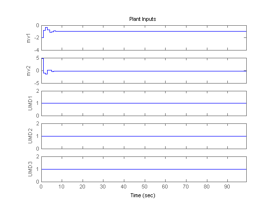
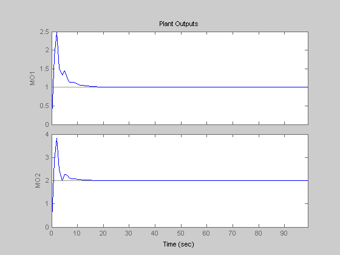

This demonstration shows how to test an MPC controller under a mismatch between the nominal model which the controller is based on and the actual plant which is controlled by MPC. The nominal system has 2 manipulated variables, 2 unmeasured input disturbances, and 2 measured outputs. The actual plant has 3 unmeasured input disturbances and a different dynamics.
Author: A. Bemporad
Define the parameters of the nominal plant which the MPC controller is based on
p1 = tf(1,[1 2 1])*[1 1; 0 1]; plant = ss([p1 p1]);
Define inputs 1 and 2 as manipulated variables, 3 and 4 as unmeasured disturbances
plant=setmpcsignals(plant,'MV',[1 2],'UD',[3 4]);
Also define input names
set(plant,'InputName',{'mv1','mv2','umd3','umd4'});
For unmeasured input disturbances, the MPC controller will use the following model
distModel = eye(2,2)*ss(-.5,1,1,0);
We are ready to create the MPC object
mpcobj = mpc(plant,1,40,2); mpcobj.Model.Disturbance = distModel;
Define the parameters of the actual plant in closed loop with the MPC controller. Note that the actual plant has three unmeasured disturbances, while the nominal one has two
p2 = tf(1.5,[0.1 1 2 1])*[1 1; 0 1]; psim = ss([p2 p2 tf(1,[1 1])*[0;1]]); psim=setmpcsignals(psim,'MV',[1 2],'UD',[3 4 5]);
Define reference trajectories and unmeasured disturbances entering the actual plant
dist=ones(1,3); % unmeasured disturbance trajectory refs=[1 2]; % output reference trajectory Tf=100; % total number of simulation steps
Create an MPC simulation object
options=mpcsimopt(mpcobj); options.unmeas=dist; options.model=psim;
Run the closed-loop MPC simulation with model mismatch and unforeseen unmeasured disturbance inputs
sim(mpcobj,Tf,refs,options);